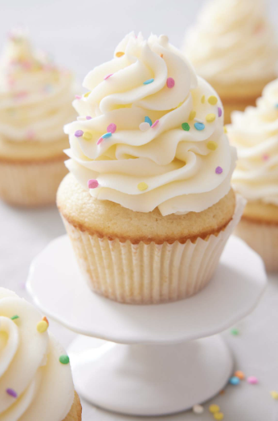
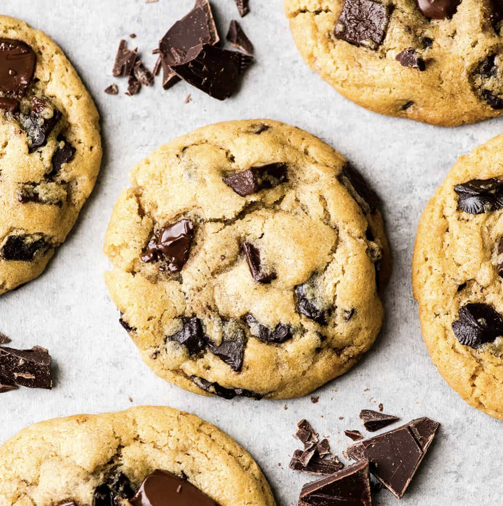
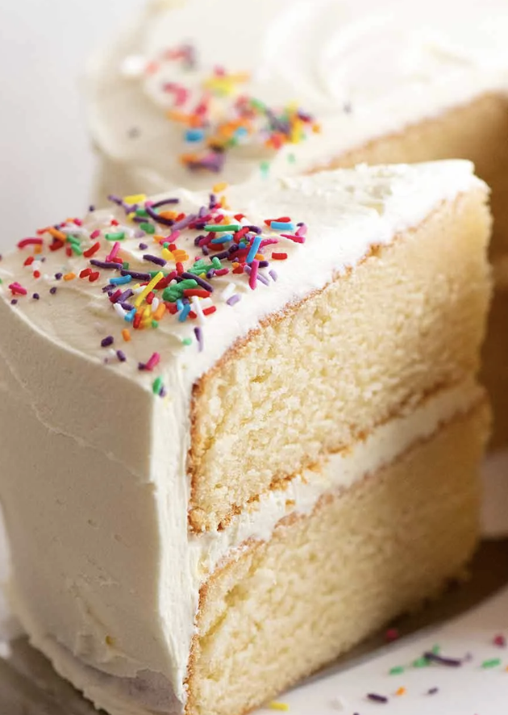

Welcome to the Delicous Dessert Website, here three dessert recipes will be shown and all you need to know about each dessert!
Cupcakes

Preppy Kitchen by John Kenall.
Cupcakes originated in the United State in the late 18th to early 19th century, with the first known mention in 1796 by Amelia Simmons as "a light cake to bake in small cups".
Chocolate Chip Cookies

Joy Food Sunshine by Laura
The chocolate chip cookie was invented in 1938 by Ruth Graves Wakefield, who ran the Toll House Inn in Whitman, Massachusetts. She created the "Toll House Chocolate Crunch Cookie" by intentionally chopping up a Nestlé semi-sweet chocolate bar and adding it to her cookie dough, expecting it to melt into a brown sugar cookie.
Vanilla Cake

Recipetintreats by Nagi Maehashi
The modern vanilla cake originated from the combination of Mesoamerican vanilla cultivation and European baking techniques, gaining popularity in the 18th and 19th centuries. While vanilla originated in Mexico, cultivated by the Totonac and Aztec peoples, the cake itself evolved from European sponge cakes, with vanilla becoming a prized flavoring ingredient after being brought to Europe.